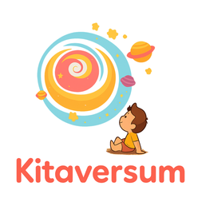
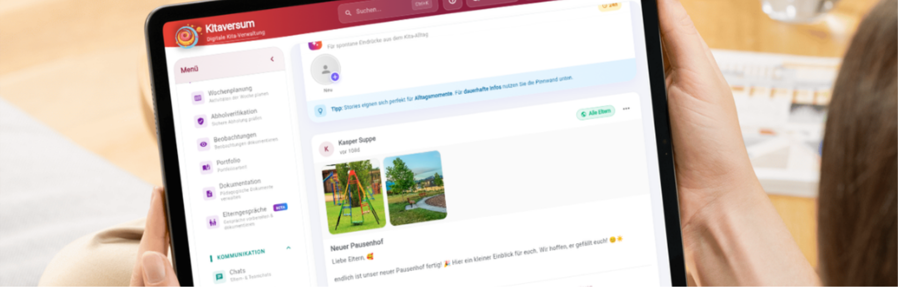
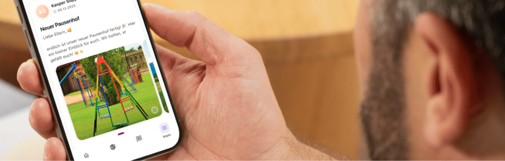
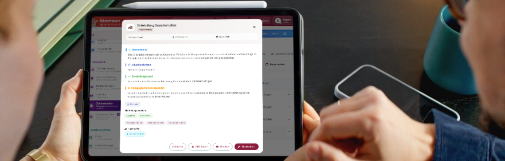

Papierlisten, Zettelchaos und ständiger Stress im Alltag müssen nicht sein. Digitale Medien in der Kita können euch genau da entlasten, wo es gerade am anstrengendsten ist. Mit der richtigen Struktur — und einer klaren Lösung wie Kitaversum — wird euer Alltag übersichtlicher, ruhiger und endlich wieder machbar.
Verwaltungsaufwand belastet¹
digitale Tools sofort entlasten
Kommunikation & Abholung

Dieser Artikel entstand in Kooperation mit Kitaversum — der digitalen Kita-Verwaltung, die euren Alltag strukturiert. Folgt uns auf Instagram: @kitaversumapp
Digitale Medien in der Kita endlich einfach nutzen — ohne Überforderung
Kennst du dieses Gefühl, wenn das Thema digitale Medien in der Kita aufkommt und sofort alles zu viel wirkt? Neue Systeme, neue Anforderungen und irgendwie keine Zeit, sich wirklich einzuarbeiten.
Gleichzeitig läuft der Alltag oft am Limit. Zettel stapeln sich, Informationen gehen verloren und Absprachen passieren nebenbei. Genau hier entsteht dieser Dauerstress, den so viele pädagogische Fachkräfte kennen.
Analog vs. Digital: Was der Unterschied im Kita-Alltag wirklich bedeutet
| Bereich | Analog (bisher) | Digital mit Kitaversum |
|---|---|---|
| Anwesenheit | Papierliste, Zettelchaos, morgens suchen | Alle Kinder auf einen Blick, sofort abrufbar |
| Dokumentation | Notizzettel, später nicht mehr auffindbar | Direkt im Moment erfassen, immer verfügbar |
| Elternkommunikation | Aushänge, mündlich, Infos gehen verloren | Nachrichten, Stories, Pinnwand — alles zentral |
| Abholorganisation | Zettel, Unsicherheit bei Änderungen | Aktuelle Abholinfos jederzeit griffbereit |
| Teamkommunikation | Nebenbei, Missverständnisse, Vergessen | Absprachen festhalten, für alle sichtbar |
| Datenschutz | Unsicher, schwer nachvollziehbar | DSGVO-konform, verschlüsselt, revisionssicher |

Vier Bereiche, in denen Kitaversum euren Alltag sofort verändert
Digitale Anwesenheitsliste
Der Tag startet und oft geht es direkt los. Mit der digitalen Anwesenheitsliste öffnest du die App und siehst sofort alles auf einen Blick. Kein Suchen, kein Rätselraten.
- Feste Morgenroutine einführen
- Alle Kinder direkt digital erfassen
- Übersicht gemeinsam im Team nutzen
Digitale Dokumentation
Beobachtungen, Notizen, Gedanken für später — direkt im Moment erfassen. Alles wird gespeichert und ist jederzeit wieder verfügbar.
- Direkt im Moment dokumentieren
- Kurz und verständlich halten
- Transparent im Team arbeiten
Digitale Kommunikation
Informationen zentral bündeln, klar weitergeben und für alle sichtbar machen — so entstehen weniger Missverständnisse und mehr Klarheit im Team und mit Eltern.
- Wichtige Hinweise teilen
- Absprachen festhalten
- Infos zentral bündeln
Abholorganisation
Änderungen bei Abholzeiten oder neue Abholpersonen — mit der App habt ihr alle Infos sofort griffbereit. Ihr wisst genau, was gilt, und könnt sicher handeln.
- Abholinfos regelmäßig prüfen
- App aktiv im Alltag nutzen
- Zuständigkeiten im Team klären

Vorteile digitaler Medien in der Kita — weniger Stress, mehr Klarheit
Digitale Medien können euch wirklich entlasten — wenn sie sinnvoll eingesetzt werden. Sie helfen euch dabei:
- Informationen schneller zu finden
- Abläufe klar zu strukturieren
- Fehler zu vermeiden
- Euch im Team besser abzustimmen

Digitale Medien in der Kita einführen — so gelingt euch der Start
Der Einstieg muss nicht perfekt sein. Viel wichtiger ist, dass ihr überhaupt beginnt. Geht Schritt für Schritt und nehmt euch den Druck raus.
Beginnt mit einem Bereich — zum Beispiel der Anwesenheit. Einen Bereich einführen ist besser als nichts zu tun.
Legt klare Abläufe fest — wer erfasst die Anwesenheit, wer schreibt Beobachtungen? Klare Zuständigkeiten helfen.
Besprecht Unsicherheiten offen im Team — ihr dürft lernen, ausprobieren und auch Fehler machen.
Klärt Datenschutzfragen frühzeitig — Kitaversum ist DSGVO-konform, aber besprecht es trotzdem mit eurem Träger.
¹ Quelle: Befragung pädagogischer Fachkräfte, Kitaversum 2024
Folge uns auf Instagram: @eduleo_akademie & @kitaversumapp